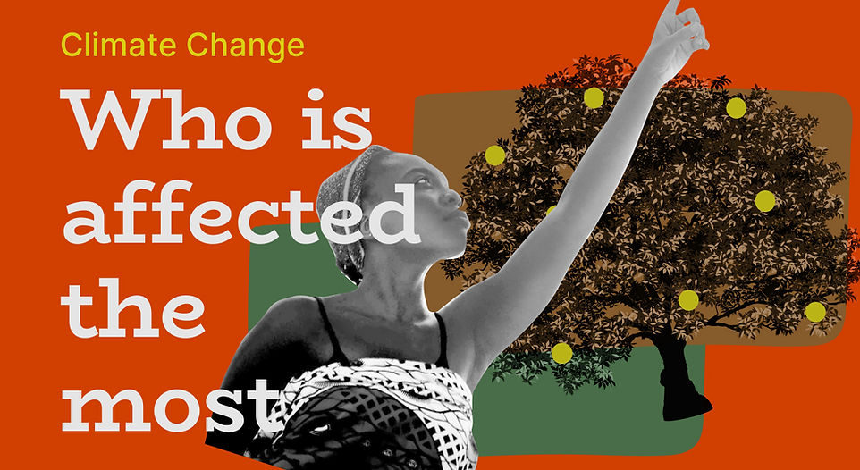
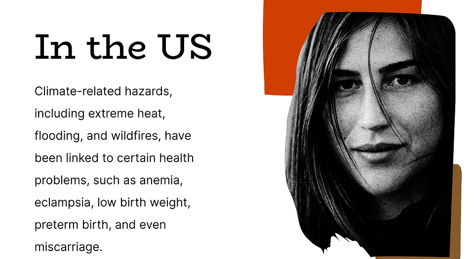
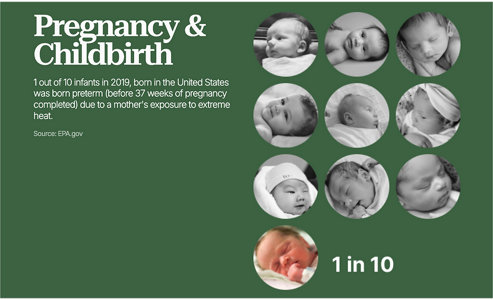
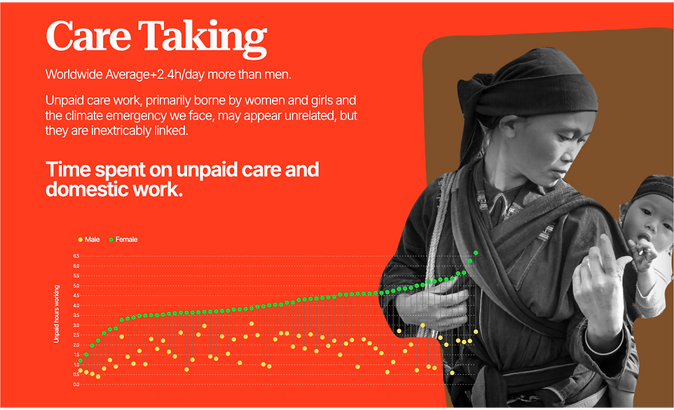

Women & Climate Change
Designer & Developer · Timeframe: 2 months · Team: Solo project

Overview
This project explains how climate change affects everyone, but disproportionately harms women and girls. It highlights how climate related hazards such as extreme heat, flooding, wildfires, hurricanes, drought, and water shortages intensify existing inequalities. The project connects climate change to women's health, pregnancy risks, maternal and infant mortality, domestic violence, unpaid care work, water collection burdens, sanitation challenges, and child marriage, showing that environmental crises often make women's daily lives more dangerous, time-consuming, and unequal.
Women as Climate Leaders
Women are not only victims of climate change but essential leaders in climate resilience and action. This project emphasizes women's roles as caregivers, food producers, first responders, environmental stewards, consumers, activists, and political leaders. Its main call to action is to support women-led climate organizations, improve sex disaggregated climate data, vote for and elevate women in decision making roles, and give young women and girls stronger platforms to lead climate solutions.

Data visualization of climate impacts on women

Interactive data exploration interface

Combining narratives with data visualization